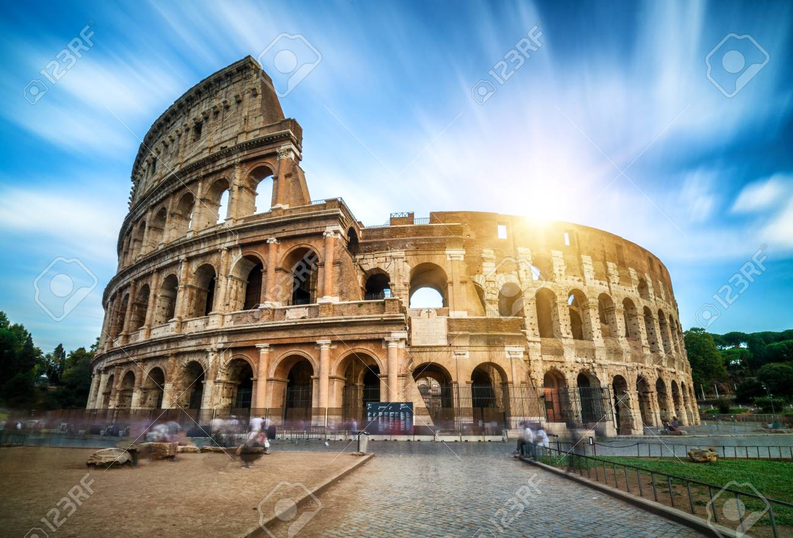
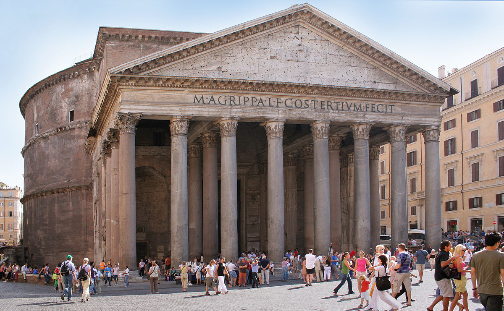
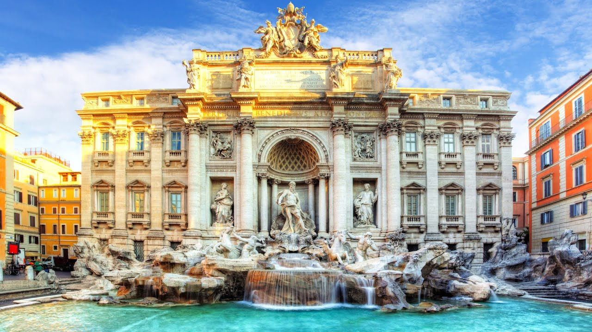
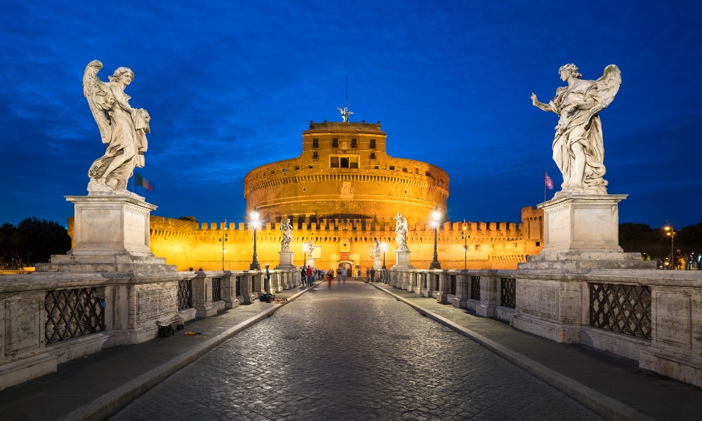

The Colosseum
- Located just east of the Roman Forum, the massive stone amphitheater known as the Colosseum was commissioned around A.D. 70-72 by Emperor Vespasian of the Flavian dynasty as a gift to the Roman people. In A.D. 80, Vespasian’s son Titus opened the Colosseum–officially known as the Flavian Amphitheater–with 100 days of games, including gladiatorial combats and wild animal fights. After four centuries of active use, the magnificent arena fell into neglect, and up until the 18th century it was used as a source of building materials. Though two-thirds of the original Colosseum has been destroyed over time, the amphitheater remains a popular tourist destination, as well as an iconic symbol of Rome and its long, tumultuous history.

The Pantheon
- The Roman Pantheon is the most preserved and influential building of ancient Rome. It is a Roman temple dedicated to all the gods of pagan Rome. As the brick stamps on the side of the building reveal it was built and dedicated between A.D 118 and 125.
The emperor Hadrian (A.D 117-138) built the Pantheon to replace Augustus’ friend and Commander Marcus Agrippa’s Pantheon of 27 B.C. which burnt to the ground in 80 A.D.
When approaching the front of the Pantheon one can see the inscription above still reads in Latin the original dedication by Marcus Agrippa.

Trevi Fountain
- Trevi Fountain is the most beautiful fountain in Rome. Measuring some 20 meters in width by 26 meters in height, Trevi Fountain is also the largest fountain in the city.
The origins of the fountain go back to the year 19 B.C., in which period the fountain formed the end of the Aqua Virgo aqueduct. The first fountain was built during the Renaissance, under the direction of Pope Nicholas V.
The final appearance of the Trevi Fountain dates from 1762, when after many years of works at the hand of Nicola Salvi, it was finalized by Giuseppe Pannini.
Interestingly enough, the name of Trevi derives from Tre Vie (three ways), since the fountain was the meeting point of three streets.

Castel Sant'Angelo
- The Mausoleum of Hadrian, usually known as Castel Sant'Angelo, is a towering cylindrical building in Parco Adriano, Rome, Italy. It was initially commissioned by the Roman Emperor Hadrian as a mausoleum for himself and his family. The building was later used by the popes as a fortress and castle, and is now a museum.